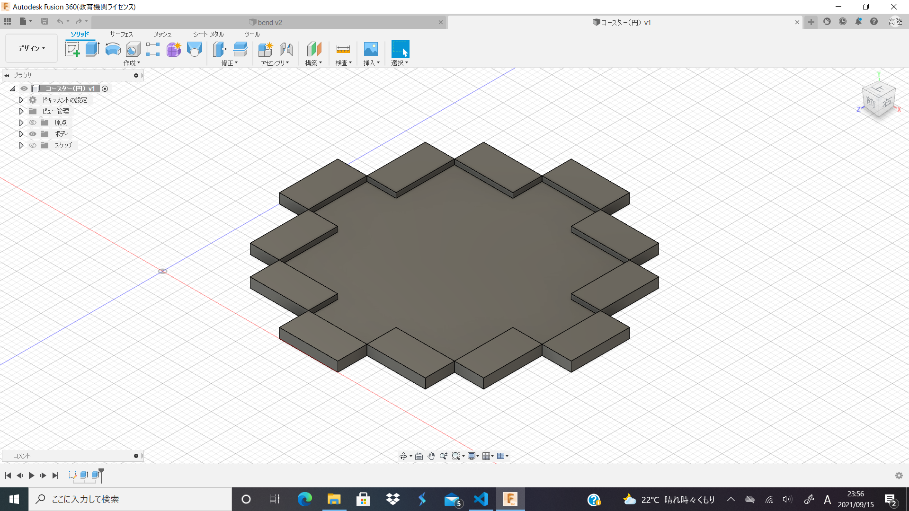
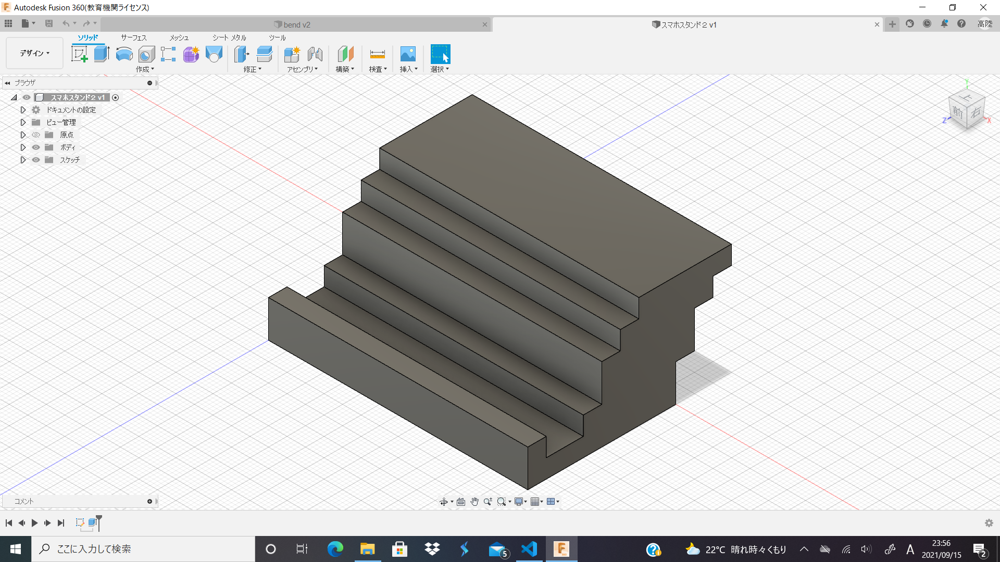
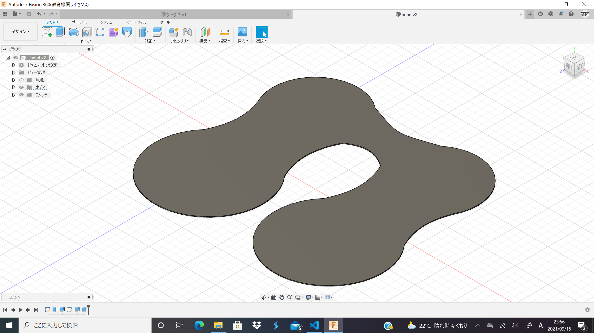

デザインした
更新9回目
これまでのDOP
病に倒れた週があり、あまり進まなかったため前回のものと合わせて書く。引き続き解像度の低い世界を中心にデザインしていく。


前回の展望で書いた通り20×20の範囲でデザインをしようと思ったが、20×20は想像より広く自分には難しかったため10×10でデザインした。モノは初めてということもあり、コースターとスマホスタンド。スマホスタンドは横置き専用にしたが縦置きも需要ありそうなので改良する。

並行して作っているのは先生がミーティングで言っていた「曲げる」を利用したモノ。画像のモノは試験的に印刷してみたものだが、実際動かしてみると結構良い。器用に曲げることで半分にしたような箱が出来上がったのでこれを利用した収納なども作れそうだ。
と思い箱を作ろうとしているが曲げられるられない以前に箱にできるほどの大きさのものが印刷できない。プリンターの印刷面をフルで使ったとしても少々小さな箱ができるだけだ。この問題は分割式にするかなにかで解決しようと思う。
今後の展望
考えるもの考えるもの全てが不要に思えてきて、製作物を増やせていないので手当たり次第に作る意気込みで製作していきたい。